Building and Running an LLM-Powered Service
The current Gen AI landscape consists of four distinct layers. Understanding where a tool sits tells you exactly what it is—and isn't—capable of.
Companies like OpenAI, Anthropic, Google, and Meta build the core engines.
These core engines (Gen AI models) have advanced a lot. We have moved from "Chat" models (GPT-4) to "Reasoning" models (OpenAI o1, DeepSeek R1). However, at their core, these are still Token Predictors. They don't see "words"; they see mathematical chunks.
This is the Distribution Layer.
An example of this layer is Hugging Face. Think of Hugging Face as the Registry & Tooling layer.
Just as GitHub hosts code, Hugging Face hosts the actual "weights" (the brain files) of open models. If a company like Meta releases Llama 3, they put it here so the rest of the world can download it, test it, and build on it. It is the "Town Square" of the AI world.
Other examples in this layer 2: ModelScope (Alibaba ecosystem), OpenModel registries inside cloud platforms and of course the internal enterprise registries (private Layer 2s)
Organizations like Groq, AWS Bedrock, and Azure AI specialize in running the models. As an example, in our workshop we use llama-3.3-70b-versatile - this is not an LLM created by Groq. It is an LLM created by Meta, hosted and optimized on Groq's hardware.
The Role of Groq: Think of the LLM (like Llama-3) as the "brain," and Groq as the "nervous system." Meta designed the brain, but Groq provides the specialized hardware that allows that brain to think and respond instantly.
The Role of Layer 3: They don't design the brains; they provide the high-speed hardware to make the brains respond instantly. The same model might take 10 seconds to respond on one platform and 0.1 seconds on another (like Groq).
This is where Salesforce Agentforce operates. An LLM is like a genius with no access to your office. The Platform Layer "grounds" the model by giving it:
In the real world, players often operate in multiple layers. For example, Layer 2 and Layer 3 can feel very similar. For clarity, you can think of Layer 2 as Model Hubs (where models live), while Layer 3 as Inference Providers (where models run). Some companies do both, which is why the boundary feels fuzzy. Hugging Face is one such example. While primarily the Layer 2 Registry (The Library), they also operate in Layer 3 (Inference). They offer an "Inference API" that lets you run models directly from their site.
Why this Workshop starts at Layer 1: We are starting "under the hood" at the Raw Model layer below the platform layer (e.g., Agentforce). Before introducing agents, orchestration, or enterprise integration, you will interact directly with a raw LLM. Seeing its strengths and limitations in isolation makes the purpose of the later stages concrete rather than conceptual.
You will see the "Reasoning" happen in real-time and understand why—without the Platform Layer (Agentforce)—even the smartest model can't actually run your business.
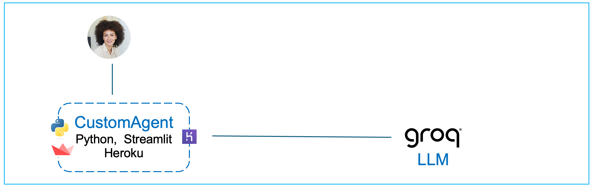
Get your starter app
After you have created a free GitHub account, copy the application for this module by forking the workshop repo.
Navigate to the following link and click on Fork: https://github.com/mas-workshop/mas_workshop_foundation_agent
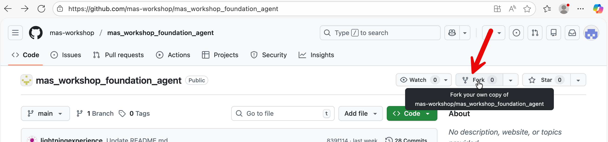
In the next page, select default values and press ‘Create Fork’ button. The repo containing the application will be copied into your GitHub account.
Let’s now deploy your app.
Login to your Heroku account and navigate to Enterprise Accounts & Teams
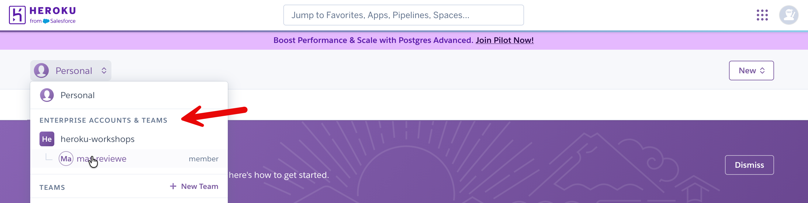
Select the enterprise account created by your instructor.
Create a new app.
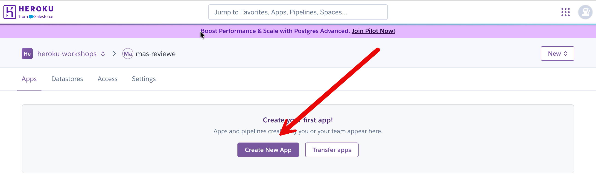
Put in an app name, select all default values and press ‘Create App’ button at the bottom.
Connect your app to GitHub.
We have prepared a python app on GitHub that you can immediately deploy and explore in Heroku.
In your Heroku app dashboard → Deploy → Github → Connect to GitHub.
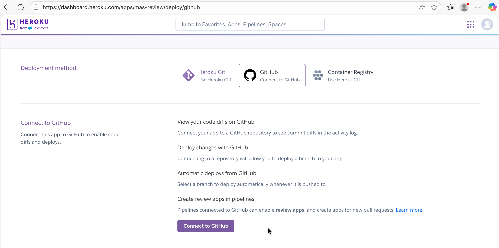
You will be prompted to Authorize Heroku. Click the button to authorize.
Type in foundation in the search box. Then click the Connect button.
Click Enable Automatic Deploys. Now when you make a change to your GitHub repository, it will be automatically pushed to Heroku.
Click Deploy Branch.
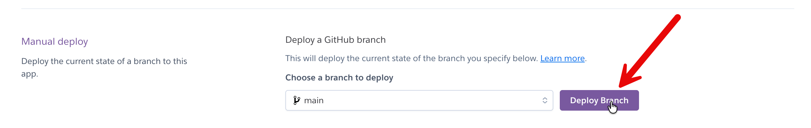
In your Heroku app dashboard, go to settings → Reveal Config Vars
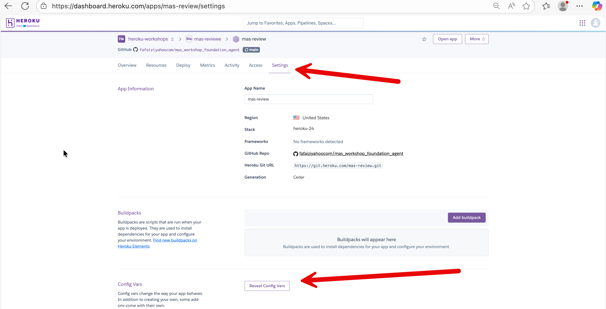
Put in your Groq API key (GROQ_API_KEY) and the value. Click Add.
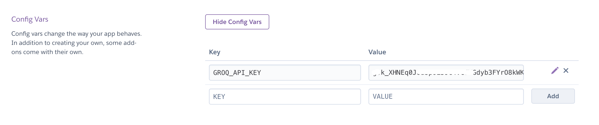
Refresh your browser and navigate to the “Resources” tab. In your Heroku dashboard, you should see a basic dyno (processor) assigned to your app.
Click on Open app.
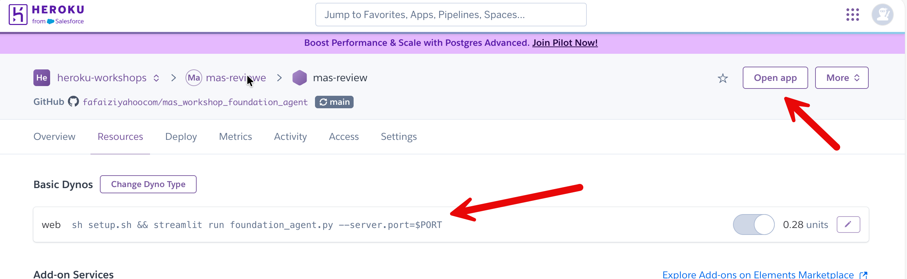
If in the resources tab, you don’t see a dyno - then in your GitHub repo, add a file with any few random values. This will trigger a push to Heroku from your repo and assign a ‘dyno’ (i.e., a processor) to your app.
When you press Open app on your Heroku dashboard, it should open up a the app for you.
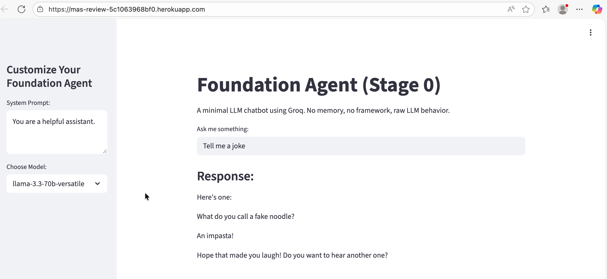
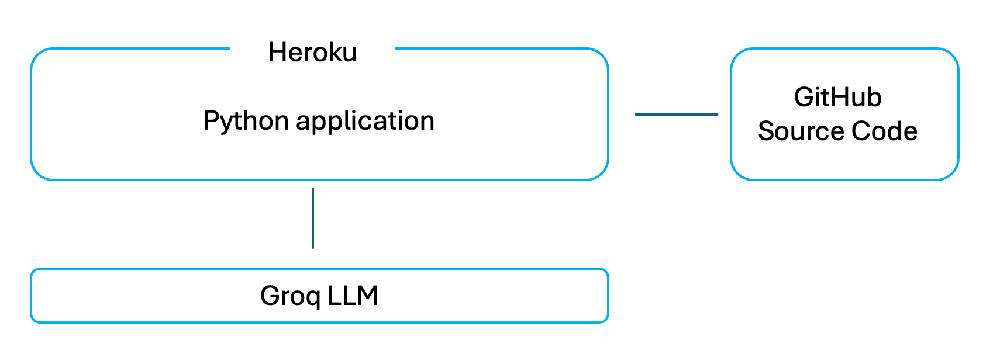
This application written in python is a very easy to understand web app that lets you type a question into a browser and see a response from a Large Language Model.
There is no hidden logic, no framework, and no automation behind the scenes. When you type something and press Enter, the app sends your text directly to the Groq LLM and displays whatever comes back.
This is a Python application that uses the Streamlit open source library to render a web interface and capture user input. Streamlit handles displaying text, input fields, and sidebar controls, and reruns the Python script whenever the user interacts with the page. The Python logic loads the Groq API key, sends the system prompt and user question to Groq, and displays the returned response. There is no memory or state: each request is independent, and Groq only sees the messages sent in that call.
This is the python file that gets deployed and executed on Heroku: https://github.com/mas-workshop/mas_workshop_foundation_agent/blob/main/foundation_agent.py The other files in your repo are simply configuration files (e.g., Procfile, requirements.txt) or miscellaneous optional lab files.
That’s the entire system.
This app is designed to be easy to reason about. Every major step is visible in the code, and nothing is abstracted away.
This makes it a good starting point, because you can clearly see what a raw LLM does on its own before adding any platform capabilities later.
How about adding some context to your agent?
You would observe in your app that your Gen AI app only sees what it is sent at that moment and does not remember past conversations by itself.
We fix this by explicitly storing the conversation inside the application and resending it on every request.
First, we create a place in the app to store messages. This is done once, near the top of the main() function. If the list does not already exist, we create it. If it already exists, we keep it. This prevents earlier questions and answers from being erased each time the app runs.
Next, each time the user asks a question, we add that question to the list. We then send Groq a combined list that includes:
After Groq replies, we also add its response to the same list. This ensures that both sides of the conversation are preserved and sent again the next time.
In the interest of time we have created a file with all these changes. We have also annotated the solution file with comments and reading it will give you a clear understanding of the changes we have made.
Simply replace the entire contents of foundation_agent.py in your GitHub repository with the contents of the solution file named foundation_agent_with_memory_annotations.py.
Once you update the file in GitHub, Heroku will automatically rebuild the app. You can monitor the progress of this deployment in your Heroku apps’ dashboard → Activities tab.
After a few minutes, open the app again from the Heroku dashboard and you will see the updated behavior.
Note: Your original minimal app is preserved as foundation_agent_bkp.py in your forked repo, in case you want to go back to it in the future
This single change teaches several foundational truths about Generative AI systems.
This also shows that state lives in the application, not the model.
In this app, Streamlit’s (python library) session state acts as a simple memory layer. What you choose to keep, what you leave out, and what you later summarize are all design decisions.
Understanding this prepares you directly for more advanced systems such as Agentforce conversation context, Retrieval-Augmented Generation (RAG), Model Context Protocol (MCP), and multi-agent handoffs.
You now have a solid Generative AI application.
It is simple, but it already demonstrates the most important boundary in GenAI systems: models generate text, applications provide memory, data and context.
Everything that comes next builds on this idea.
Commercial Generative AI applications (such as ChatGPT) do not rely on the model to remember conversations because it is not technically possible for the model to do so.
Conversation history is stored outside the model and reconstructed on every request.
This hybrid approach keeps responses relevant without resending everything forever.
What these systems are not doing is caching conversations inside the model, relying on hidden memory, or skipping context entirely. Regardless of where conversation state is stored, the model only sees the text explicitly sent to it at that moment.
All this makes production AI applications inherently complex, because developers must manage context, memory, security, scaling, monitoring, and governance in addition to calling the model itself.
Platforms such as Agentforce simplify this complexity by handling conversation context, data access, permissions, and orchestration for you, while still allowing flexibility in how models, prompts, actions, and integrations are used.
You will often hear AI divided into predictive and generative. This distinction is useful, but it can also be misleading if taken too literally.
It is important to clarify two foundational categories that shape modern enterprise AI systems: Predictive AI and Generative AI. While they are often discussed together, they serve different purposes, operate under different constraints, and are designed to answer different kinds of questions.
Predictive AI is about estimating an outcome from known patterns. Given past data, it predicts a value, a class, or a probability: fraud or not, churn risk, demand forecast, next best offer. These systems usually produce structured outputs and are evaluated on accuracy, precision, and recall. Most enterprise machine learning over the past decade falls into this category.
Generative AI produces new content rather than a score or label. Instead of predicting which bucket something belongs to, it generates text, images, code, or plans. Large Language Models fall into this category because their output is free-form and open-ended.
Here’s the important nuance: both are predictive at their core.
A generative model is still making predictions — just at a much finer level. Instead of predicting a churn score or a category, it predicts the next token (piece of text) repeatedly, guided by probability. The “generation” emerges from a long sequence of tiny predictions.
So the difference is not that one predicts and the other doesn’t. The difference is:
This is why generative systems feel flexible and conversational, but also why they can be confidently wrong. They optimize for plausibility, not truth.
In enterprise systems, the two are often combined. Predictive models determine what should happen (risk, priority, eligibility), while generative models determine how it is communicated (explanations, summaries, instructions).
Understanding this division is key to designing systems that are both powerful and reliable.
Generative AI can approximate some predictive tasks, but it does not replace predictive models for core scoring and classification use cases. These problems require statistical rigor, stability, and governance that Large Language Models are not designed to provide.
For example, lead or opportunity scoring is not appropriate for Generative AI. LLMs do not optimize for calibration, repeatability, or statistical validity. Predictive scoring models, by contrast, are explicitly trained on labeled historical data, validated against measurable accuracy metrics, monitored for drift, and governed over time.
Similarly, using Generative AI to estimate churn or renewal likelihood is architecturally incorrect. This is a probability estimation problem across large populations, where consistent outputs and confidence calibration are essential. Predictive models are designed to produce these probabilities reliably. Generative AI may surface churn-related signals from unstructured text, but it cannot replace the probability itself.
In these scenarios, Generative AI and Predictive AI work best together. Predictive models determine what is likely to happen, while Generative AI–based applications such as Agentforce retrieve those scores and use them to produce contextual explanations, recommendations, and next-best actions in natural language.
This workshop focuses on Generative AI so you can see its strengths and limitations clearly before it is combined with predictive logic (for example, Agentforce actions that consume predictive model outputs), data grounding (such as Retrieval-Augmented Generation in Data360), and enterprise controls provided by platforms like Agentforce and MuleSoft.